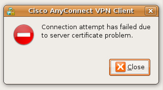

Cisco AnyConnect
Inhaltsverzeichnis
Installation
Der Cisco AnyConnect VPN-Client kann man sich direkt bei der HSR herunterladen. Mit der zugehörigen Installationsanleitung für Linux und Mac klappt das Verbinden sehr gut.
Nach dem herunterladen muss der Client noch ausgepackt werden z.B. mit dem GUI Programm "file-roller" oder auf der Konsole:
$ gunzip anyconnect-linux-2.2.0136-k9.tar.gz $ tar xvf anyconnect-linux-2.2.0136-k9.tar
Danach kann die Installation gestartet werden:
# ./vpn_install.sh
Es werden keine weiteren Eingaben des Benutzers verlangt. Nach der Installation findet sich der Client im Menü unter "Applications/Internet" (Gnome).
64 Bit
Offenbar scheint der Linux Client für 64 Bit nicht zu funktionieren. ToDO: Weitere Infos?
Fehlerquellen
tun Device
Unbedingt beim Kernel kompilieren darauf achten, das tan-Device anzuwählen, am besten als nachladbares Modul:
# cd /usr/src/linux
# make menuconfig
Device Drivers --->
[*] Network device support --->
<M> Universal TUN/TAP device driver support
Nun kann das Modul kompiliert und installiert werden
# make modules && make modules_install
Jetzt kann das Modul nachgeladen werden. Um nicht jedesmal das Modul wieder nachladen zu lassen, kann es als "autoload" konfiguriert werden:
# modprobe tun # echo "tun" >> /etc/modules.autoload.d/kernel-2.6
Ab jetzt ist das tun vorhanden und steht der AnyConnect Software zur Verfügung
Symlink auf Libraries
siehe auch [1]
Der Client scheint einige Libraries mit hard-codierten Namen zu erwarten. Falls der Client mit einer Meldung über ein falschen Zertifikat abbricht, wäre dies einen Versuch wert.
Fehlermeldung:

{kind=link}
Anlegen der Symlinks:
# ln -s /usr/lib/libnss3.so.11 /usr/lib/libnss3.so # ln -s /usr/lib/libsmime3.so.11 /usr/lib/libsmime3.so # ln -s /usr/lib/libplc4.so.6 /usr/lib/libplc4.so # ln -s /usr/lib/libnspr4.so.6 /usr/lib/libnspr4.so
ACHTUNG: Die Nummer (11/6) hinter dem .so kann von der hier gezeigten abweichen.